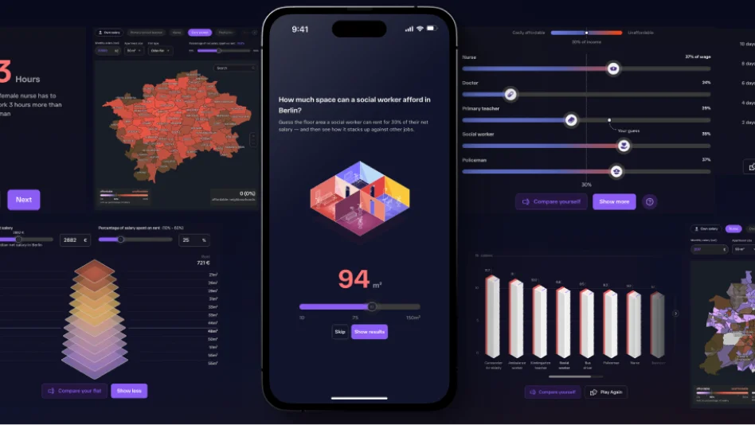
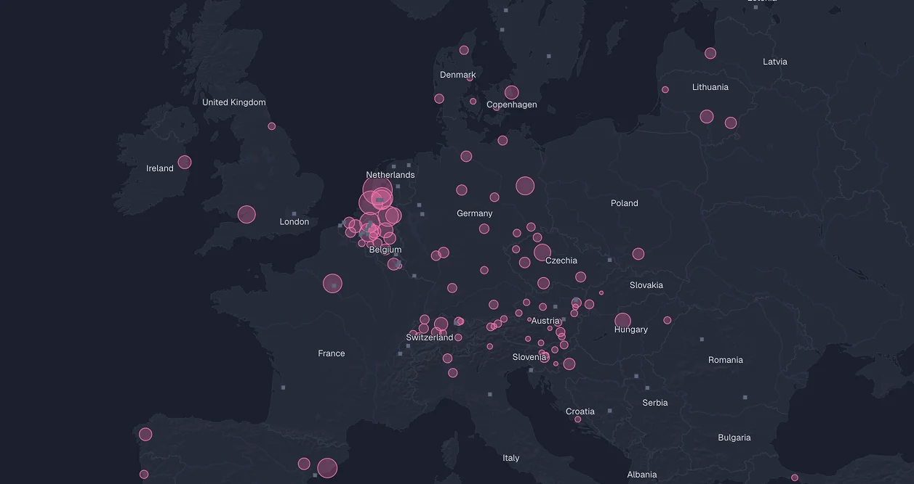
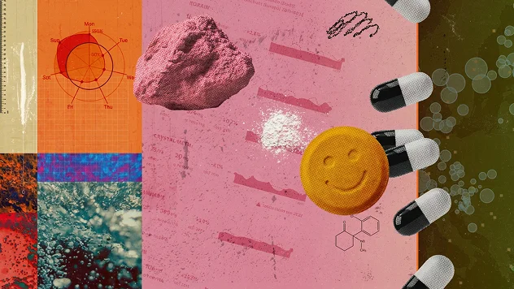

I think the essence of good design has never been the output. It's about collaboration, where people can see, question, and refine decisions together in a shared space.
I work closely with developers, editors, and stakeholders to make sure the outcome is not just beautiful but genuinely useful — and built to last.
When I'm not pushing pixels, you'll find me making ceramics.
End-to-end design for digital products — from concept and wireframes to polished, production-ready interfaces.
Qualitative and quantitative research methods that ground design decisions in real user needs and behaviors.
Design strategy workshops, critiques, and advisory work for teams building complex digital products.
Interactive and static data visualizations that make complex information legible and compelling.

An interactive, game-like investigation into Europe's housing crisis — letting readers experience complex data in a meaningful and playful way.
End-to-end product design for a satellite image analytics platform — turning a fragmented dashboard into a coherent, fast, and genuinely usable tool.

Award-winning maps, charts, and interactive graphics for international news outlets — translating complex datasets into stories readers actually understand.

Visual identity and art direction for long-form digital features — building the systems, templates, and visual language for stories that need to breathe.
All my Experiments, Tinkerings and AI Slop
I'm always open to new projects, collaborations, and conversations. Drop me a line.
hello@beneb.de